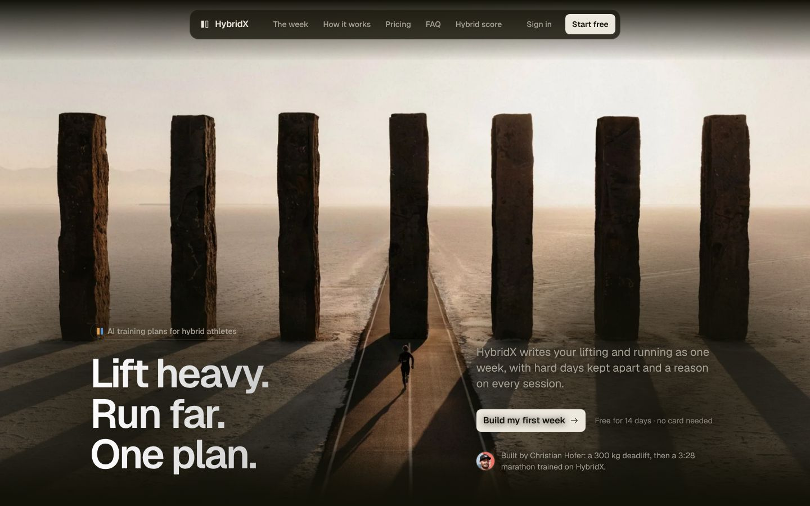
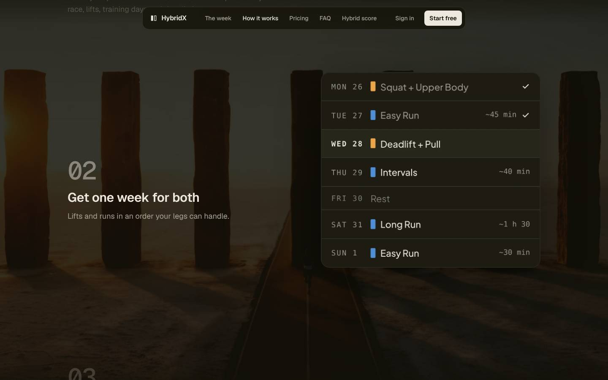

HybridX · landing previews
Two versions
Both open on the slabs filling the screen, keep them dimmed behind the page while the day passes, and frame them again at blue hour at the close. They differ in one thing: in G the app's screens stand on windows where the slabs show at full strength; in E they stand on the dimmed slabs. Open each on a phone and on a desktop and scroll all the way down.

With windows GEach app screen stands on a window where the slabs show at full strength, at the hour the page has reached.

Without windows EThe same page, the app's screens standing straight on the dimmed slabs with their shadow.